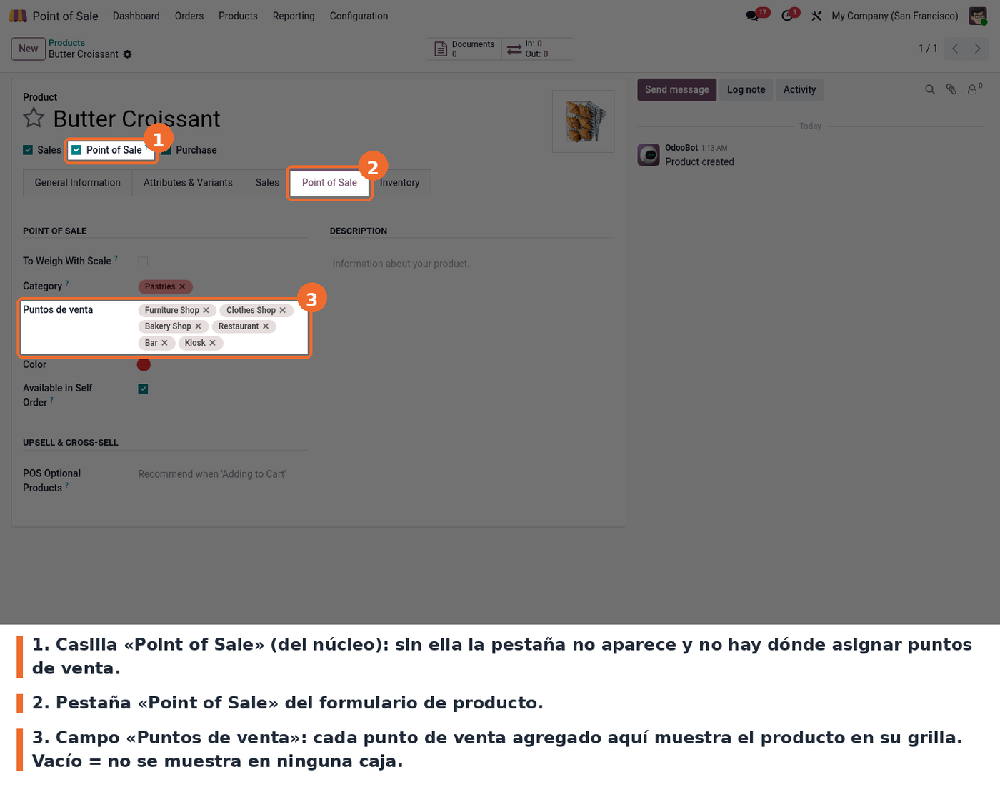
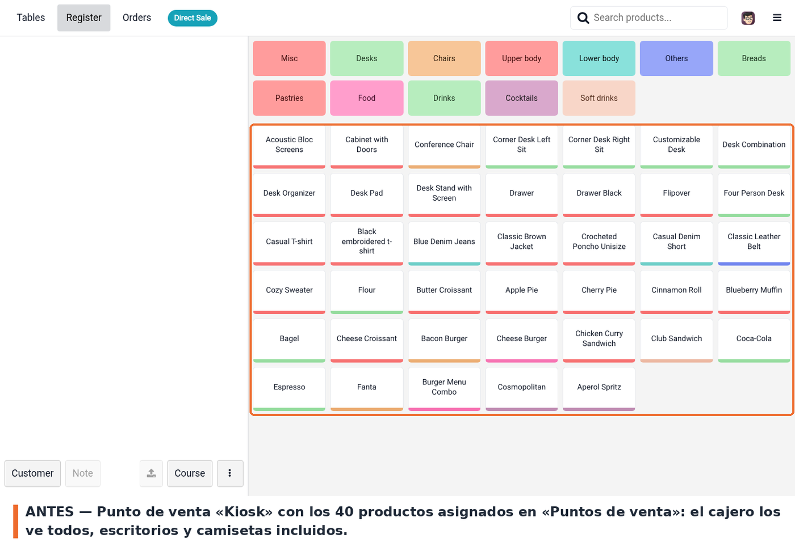
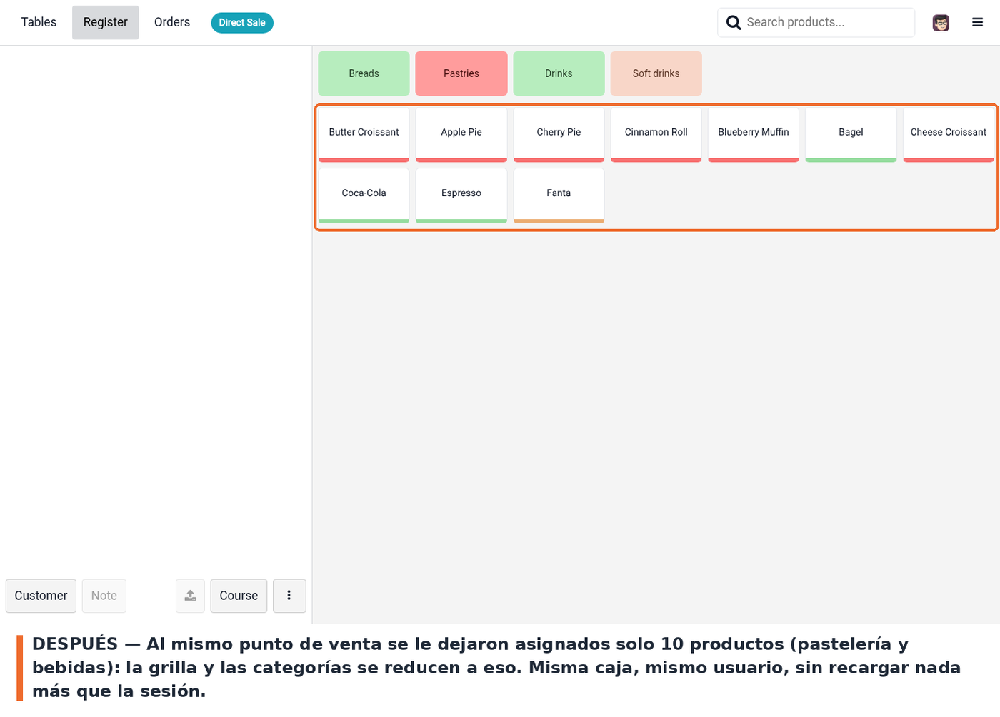

De fábrica, todo producto marcado como Point of Sale aparece en la pantalla de productos de todas las cajas de la compañía. Con varios locales en la misma base —una tienda, un restaurante, un kiosco— el cajero termina viendo un catálogo que no vende.
Este módulo agrega al producto el campo Puntos de venta. El punto de venta carga y muestra solo los productos que lo tienen a él en ese campo. No hay ajuste que activar ni pantalla de configuración aparte: la relación se define producto por producto y rige de inmediato en la siguiente apertura de la sesión. Funciona sobre Odoo 19.0.
El módulo no agrega ajustes al punto de venta ni a los Ajustes generales: toda la configuración es la asignación de cada producto a sus cajas.
La pestaña Point of Sale solo existe si el producto tiene tildada la casilla Point of Sale de la cabecera. Esa casilla es del núcleo de Odoo, no de este módulo, y es la que habilita el producto para el punto de venta.
Después de cambiar las asignaciones no alcanza con recargar la pestaña del POS: hay que volver a entrar al punto de venta desde el backend (Abrir caja / Continue Selling) para que la sesión cargue la nueva lista de productos.
La asignación se hace en la ficha del producto, pestaña Point of Sale, campo Puntos de venta.

Formulario de producto, pestaña Point of Sale, con el campo Puntos de venta resaltado
El cajero no hace nada distinto: abre su caja y la grilla ya viene recortada. En el ejemplo, el punto de venta Kiosk tenía asignados los 40 productos de la base de demostración —muebles, ropa, panadería y bebidas, todo junto—.

Pantalla de productos del punto de venta Kiosk con los 40 productos asignados
Se le quitó el punto de venta Kiosk del campo Puntos de venta a todo lo que no fuera pastelería ni bebidas, y se volvió a entrar a la misma caja. Quedan diez productos, y las categorías vacías también desaparecen de la barra superior.

La misma pantalla de productos mostrando solo los diez productos asignados al punto de venta
static/description/icon.png: el módulo se muestra con el icono genérico de Odoo.